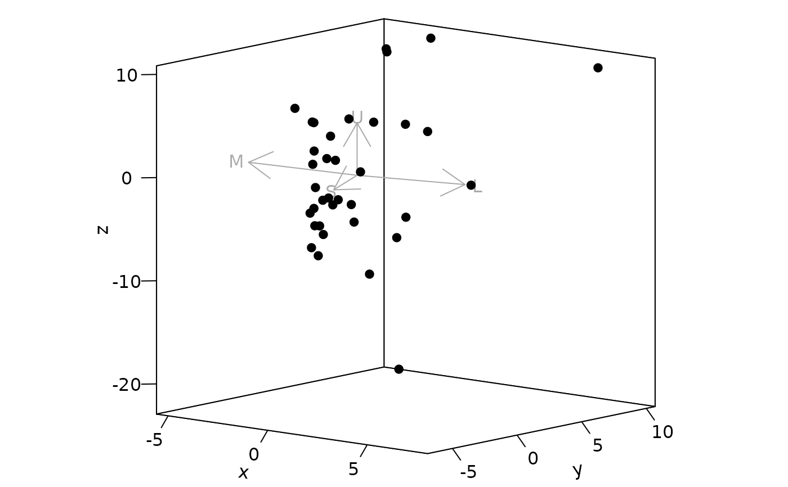

Plot options for jnd2xyz objects.
jndplot(x, arrow = c("relative", "absolute", "none"), achro = FALSE, arrow.labels = TRUE, arrow.col = "darkgrey", arrow.p = 1, labels.cex = 1, margin = "recommended", square = TRUE, ...)
| x | (required) the output from a |
|---|---|
| arrow | If and how arrows indicating receptor vectors should be
drawn. Options are |
| achro | Logical. Should the achromatic variable be plotted as a
dimension? (only available for dichromats and trichromats, defaults to |
| arrow.labels | Logical. Should labels be plotted for receptor arrows?
(defaults to |
| arrow.col | color of the arrows and labels. |
| arrow.p | scaling factor for arrows. |
| labels.cex | size of the arrow labels. |
| margin | accepts either |
| square | logical. Should the aspect ratio of the plot be held to 1:1?
(defaults to |
| ... | additional parameters to be passed to |
Creates a plot, details of the plot depend on the input data.
the arrow argument accepts three options:
"relative": With this option, arrows will be made relative to the data. Arrows
will be centered on the data centroid, and will have an arbitrary length of half the
average pairwise distance between points, which can be scaled with the arrow.p
argument.
"absolute": With this option, arrows will be made to reflect the visual system
underlying the data. Arrows will be centered on the achromatic point in colourspace, and
will have length equal to the distance to a monochromatic point (i.e. a colour that
stimulates approximately 99.9
the arrow.p argument, in which case they cannot be interpreted as described.
"none": no arrows will be included.
Pike, T.W. (2012). Preserving perceptual distances in chromaticity diagrams. Behavioral Ecology, 23, 723-728.
#> Warning: Quantum catch are relative, distances may not be meaningful#>